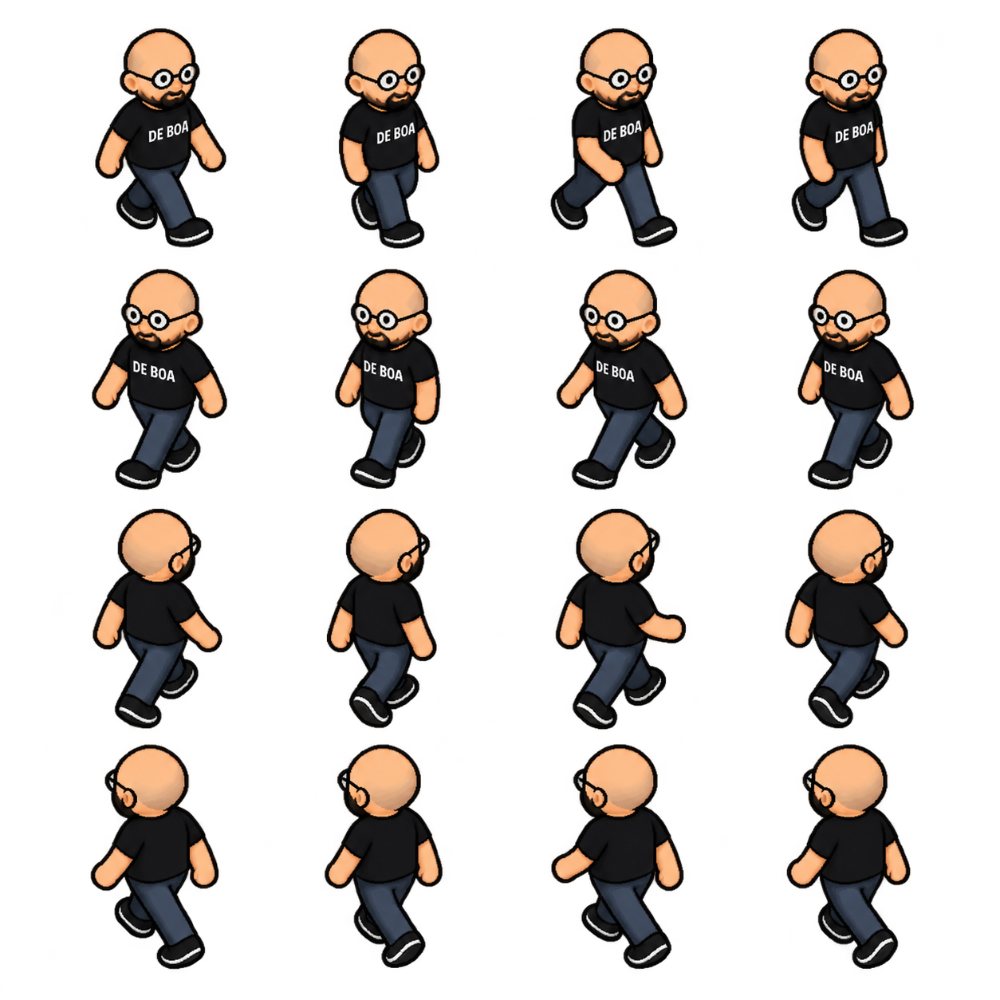
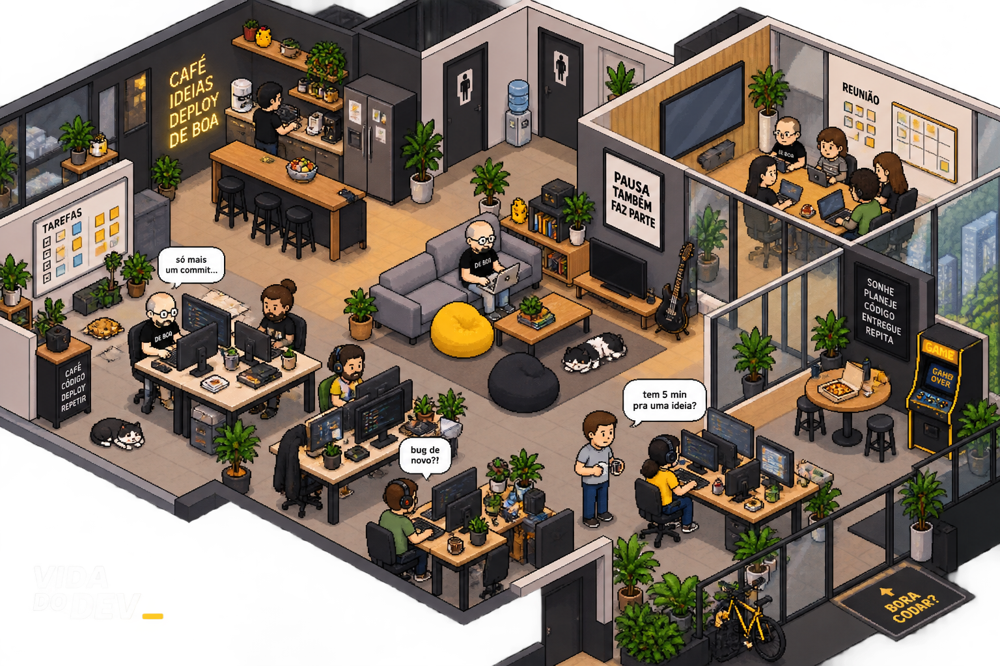

Este atlas está reprovado para uso na cena nesta revisão técnica. As direções são reconhecíveis, mas a alternância das pernas não forma um ciclo confiável; os quadros também não seguem uma grade uniforme. Esta página permite avaliar a proposta, sem substituir os sprites do jogo ou a referência original.
Os recortes abaixo usam os limites reais de cada silhueta e alinham os pés. Essa normalização serve à inspeção; não corrige a anatomia nem produz aprovação artística.

Comparar identidade, proporções, traço e textura com os personagens da ilustração.

Abrir o jogo com os sprites atuais · Critérios e limitações desta proposta